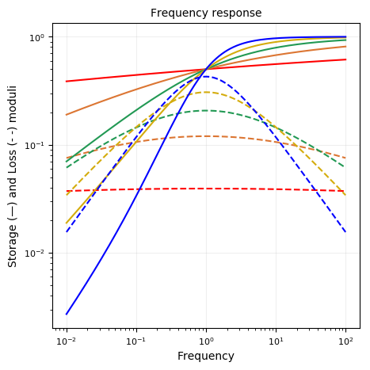
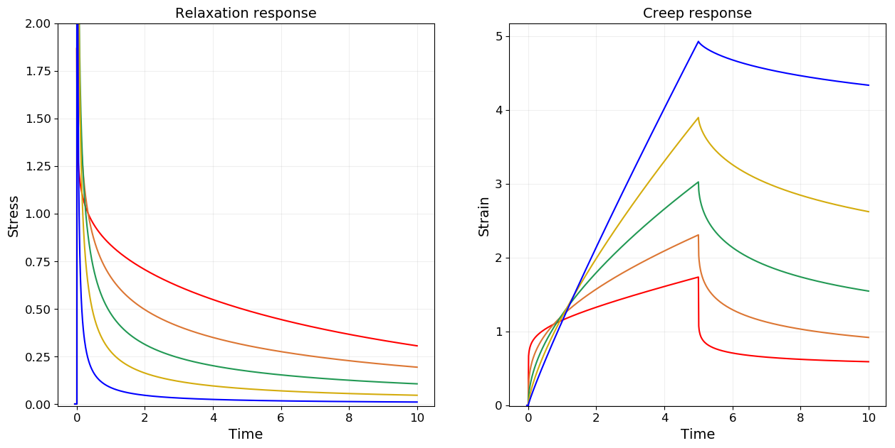
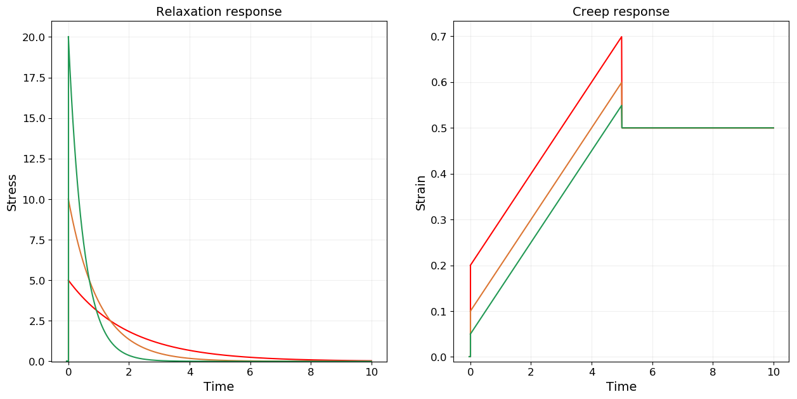

Fractional Maxwell
using RHEOS
include("plotmodel.jl")plotmodel (generic function with 1 method)FractionalMaxwellModel name: fractmaxwell
Free parameters: cₐ, a, cᵦ and β
___╱╲__________╱╲____
╲╱ ╲╱
cₐ,a cᵦ, βConsitutive equation
\[\sigma(t) + \frac{c_\alpha}{c_\beta} \frac{d^{\alpha-\beta} \sigma(t)}{dt^{\alpha-\beta}}= c_{\alpha} \frac{d^\alpha \epsilon(t)}{dt^\alpha}\]
Relaxation modulus
\[G(t) = c_\beta t^{-\beta} E_{\alpha-\beta,1-\beta}\left(-\frac{c_\beta}{c_\alpha} t^{\alpha-\beta}\right)\]
Creep modulus
\[J(t) = \frac{1}{c_\alpha \Gamma(1+\alpha)}t^\alpha+\frac{1}{c_\beta \Gamma(1+\beta)}t^\beta\]
Storage modulus
\[G^{\prime}(\omega) = \frac{\left(c_\beta \omega^\beta\right)^2 \cdot c_\alpha \omega^\alpha \cos(\alpha \frac{\pi}{2}) + \left(c_\alpha \omega^\alpha\right)^2 \cdot c_\beta \omega^\beta \cos(\beta \frac{\pi}{2})}{\left(c_\alpha \omega^\alpha\right)^2+\left(c_\beta \omega^\beta\right)^2+2c_\alpha \omega^\alpha \cdot c_\beta \omega^\beta \cos((\alpha-\beta)\frac{\pi}{2})}\]
Loss modulus
\[G^{\prime\prime}(\omega) = \frac{\left(c_\beta \omega^\beta\right)^2 \cdot c_\alpha \omega^\alpha \sin(\alpha \frac{\pi}{2}) + \left(c_\alpha \omega^\alpha\right)^2 \cdot c_\beta \omega^\beta \sin(\beta \frac{\pi}{2})}{\left(c_\alpha \omega^\alpha\right)^2+\left(c_\beta \omega^\beta\right)^2+2c_\alpha \omega^\alpha \cdot c_\beta \omega^\beta \cos((\alpha-\beta)\frac{\pi}{2})}\]
Fractional (Spring) Maxwell
FractionalMaxwellSpringModel name: fractmaxwell_spring
Free parameters: cₐ, a and k
___╱╲_________╱╲ ╱╲ ╱╲ ________
╲╱ ╲╱ ╲╱ ╲╱
cₐ,a kmodels = Vector{RheoModel}()
# plot moduli for varying α
for (i,alpha) in enumerate([0.1, 0.3, 0.5, 0.7, 0.9])
models = vcat(models,RheoModel(FractionalMaxwellSpring,(cₐ = 1.0, a = alpha, k = 1.0)))
end
plotmodel(models);

Fractional (Dashpot) Maxwell
FractionalMaxwellDashpotModel name: fractmaxwell_dashpot
Free parameters: η, cᵦ and β
___
_____| |_________╱╲____
_|_| ╲╱
η cᵦ, βmodels = Vector{RheoModel}()
# plot moduli for varying β
for (i,beta) in enumerate([0.1, 0.3, 0.5, 0.7, 0.9])
models = vcat(models,RheoModel(FractionalMaxwellDashpot,(η = 10, cᵦ= 1.0, β = beta)))
end
plotmodel(models, ymaxG = 2.0);


Maxwell model
MaxwellModel name: maxwell
Free parameters: η and k
___
_____| |________╱╲ ╱╲ ╱╲ ___
_|_| ╲╱ ╲╱ ╲╱
η kmodels = Vector{RheoModel}()
# plot moduli for varying k
for (i,k) in enumerate([5.0, 10.0, 20.0])
models = vcat(models,RheoModel(Maxwell,(η = 10, k = k)))
end
plotmodel(models);